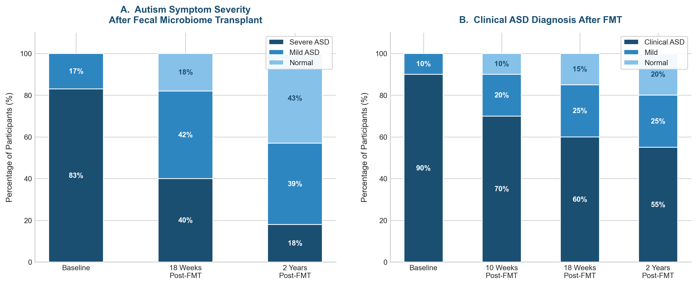

, Master Your Oxytocin
You might think this sounds like a non sequitur. Earlier, I explained how the Korean proverb "When your cousin buys land, your stomach hurts" is actually backed by science. Well, one of the hottest topics in the scientific world right now is the gut microbiome — the vast community of bacteria living in your intestines, commonly called the microbiome. If the human body contains roughly 30 trillion cells, the bacteria residing in your gut number approximately 38 trillion. More bacteria live inside your intestines than there are cells making up your entire body. Moreover, these 38 trillion bacteria comprise about 1,000 different species — a stunning display of diversity. When you analyze the genetic material of these bacteria, they possess roughly 100 to 150 times more genes than the human genome itself. It makes you wonder: am I living inside these bacteria, or are they living inside me? All told, these microorganisms weigh a mere 200 grams or so. So why has this tiny community sent the global scientific world into a frenzy? Let us find out.
A Shocking Revelation from Fat Microbiomes
My own interest in the microbiome was first sparked by media reports of so-called "obesity bacteria." A landmark 2013 study published in Science explained why even among genetically identical twins, one can be obese while the other is slim. In simple terms, the researchers transplanted microbiome samples from the feces of an obese twin and a lean twin into laboratory mice. The mice that received the obese twin's microbiome became fat, and those that received the lean twin's microbiome stayed thin. When I first read this paper, I thought, "Come on, that can't be right." Body composition is determined by so many factors that I dismissed it as an experimental artifact.1
But when I read the paper more carefully, I discovered the experimental conditions had been rigorously controlled. And the follow-up experiments were even more striking. When the researchers housed the fat-microbiome mice and lean-microbiome mice together in the same cage, the fat mice started losing weight. "Wait, what? Weight loss can be this easy?" Reading further, I finally understood the mechanism. In a shared cage, there is no separate bathroom — the mice defecate wherever they happen to be. They step on each other's feces and inadvertently consume them, causing their gut bacteria to intermingle. The fat mice were essentially ingesting the lean mice's microbiome. The result? The obese mice slimmed down. If this principle could be harnessed commercially, it could revolutionize the multi-billion-dollar diet industry overnight.
Autism and the Microbiome
Even more captivating than the obesity research was the emerging link between the microbiome and autism. While numerous studies have investigated the relationship between antibiotic use and autism, the scientific community remains split — roughly half support a connection, half do not. I find this entirely predictable. Autism has both genetic and environmental causes.*
The hallmark of autism spectrum disorder is impaired social functioning. As I discussed earlier, individuals with autism struggle to make eye contact, cannot read emotions from facial expressions, and even when they do pick up on emotions, they have difficulty empathizing. Given the established relationship between oxytocin and autism — where low oxytocin levels or mutations in the oxytocin receptor are associated with reduced empathy and increased risk of autism — the gut-brain connection becomes highly relevant. Multiple genes related to the oxytocin receptor have been identified, and the number of variants an individual carries can predict the severity of symptoms.
So why might antibiotic treatment be linked to autism symptoms? Because of the microbiome. About 70 percent of people with autism spectrum disorder are known to have gastrointestinal problems. A research team in Arizona first treated children with autism with antibiotics for two weeks, then transplanted healthy microbiome samples over a period of 7 to 8 weeks and observed the results.
The results were nothing short of stunning. Gastrointestinal symptoms improved by approximately 80 percent, and autism symptoms also showed partial improvement. Two years later, the same team published a follow-up tracking the children who had received the transplants. Of the 18 participants, a significant number had seen their autism symptoms either disappear entirely or diminish to mild levels. When fecal samples from 16 of the 18 participants were analyzed, Bifidobacterium and Prevotella — two beneficial bacterial genera — had increased substantially. This means that changes in the gut microbiome alone produced dramatic improvements not only in gastrointestinal health but also in the social functioning of children with autism.2
\* Genetic factors account for only about 10-20 percent of autism spectrum disorder. In cases where autism arises from environmental or acquired factors, genetics plays a triggering role. For example, when an individual already carries many autism-related genetic variants, it is difficult to attribute autism symptoms solely to antibiotic use. Conversely, in the rare case where no autism-related genetic variants are present, antibiotic use alone might theoretically trigger symptoms — though this requires further scientific verification.
Change Your Life to Master Your Gut
So the natural question follows: could changes in the microbiome improve social functioning even in people without autism? Some university hospitals in Korea are already conducting selective clinical studies on this very question. But we do not all need microbiome transplants. Changing what we eat three times a day is enough.
The foods that support a thriving gut microbiome are surprisingly ordinary. The primary fuel for gut bacteria is carbohydrates — specifically, the kind that are not absorbed in the small intestine and make it all the way to the large intestine. These are vegetables and dietary fiber. This is precisely why we need to eat more vegetables. Second, reduce your intake of processed foods. Among your gut bacteria, there are beneficial and harmful species, and maintaining their balance is paramount. Processed foods increase harmful bacteria and decrease beneficial ones because they contain virtually no fiber. Diets rich in processed foods and sugar disrupt the balance between beneficial and harmful bacteria, potentially leading to chronic inflammation and a weakened immune system.
Third, adopt a healthier overall lifestyle. Regular exercise, avoiding excessive alcohol and tobacco, getting adequate sleep, and maintaining a healthy weight all contribute to a thriving gut environment. For exercise, aim to include brisk walking (power walking), cycling, and strength training — activities that get you breathing hard. Of course, choose activities appropriate for your joint health, and for the sake of oxytocin, exercise with others whenever possible rather than alone. Alcohol and smoking are devastating to gut health. This is so obvious that I will spare you the detailed explanation.
Adequate sleep and time-restricted eating are absolutely essential for gut health. These two factors are especially critical because irregular eating habits — particularly the Korean culture of heavy late-night snacking (yasik) — wreak havoc on both gut health and sleep quality. Look at the chemical formula of carbohydrates (C6H12O6): glucose is essentially carbon with water molecules attached. When you wake up in the middle of the night after a carb-heavy late snack, it is because the water released during carbohydrate metabolism needs to be expelled. Moreover, carbohydrates raise blood insulin, and elevated insulin triggers wakefulness, preventing restful sleep. But is protein any better? Protein requires far more energy to digest, forcing your stomach and intestines to keep working instead of resting — so excessive protein as a late-night snack can actually be worse.3
The Microbiome-Oxytocin Connection
The mechanisms by which the microbiome and oxytocin influence social behavior are remarkably similar. When you take antibiotics that kill gut bacteria, oxytocin levels drop, and sociability declines with them. Among gut bacteria, beneficial strains like Lactobacillus reuteri not only increase oxytocin production but also enhance social behavior. In fact, L. reuteri's benefits extend far beyond sociability — it has anti-cancer, anti-inflammatory, antidepressant, immune-boosting, anti-obesity, and wound-healing properties. These effects overlap strikingly with oxytocin's own benefits.
So what happens when you give Lactobacillus reuteri to animals that lack functional oxytocin receptors? Fascinatingly, when oxytocin cannot function properly, Lactobacillus's wound-healing, immune-boosting, and anti-obesity effects are dramatically reduced or disappear entirely. And when the vagus nerve — the main parasympathetic pathway — is severed, both oxytocin's and Lactobacillus's effects plummet. These intriguing findings dovetail with recent research showing that stimulating the parasympathetic nervous system through meditation, exercise, and even electrical stimulation can influence depression and various other mental health conditions. The bottom line: master your gut, and you master your oxytocin. That is no exaggeration.4